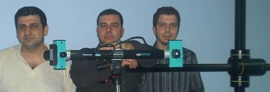
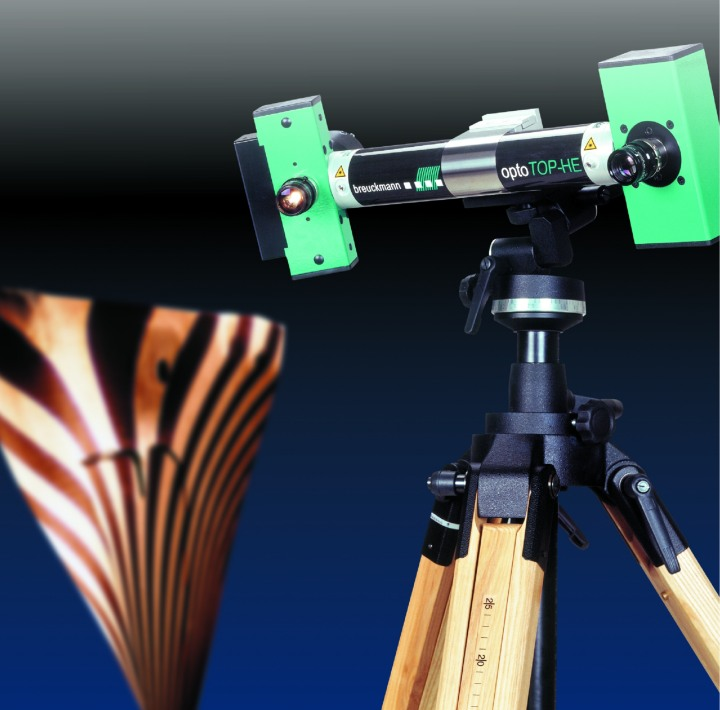
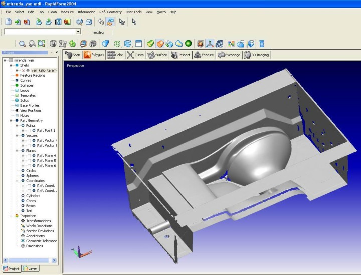

U. Kerim Yücel, Pazar ve Ürün Geliþtirme Müdürü
Süphan Ercan, CAM Yöneticisi
Ege Vitrifiye Saðlýk Gereçleri A.Þ.
Not: Bu yazý, ilk defa TurkCADCAM.net
Dergisi Ocak-Þubat 2006 Sayýsýnda yayýnlanmýþtýr.
Ege Vitrifiye, seramik ürünlerinin tasarým, imalat ve kalite kontrol iþlemlerinde kullanmak üzere, Breuckmann* tarafýndan üretilen optoTOP-HE üç boyutlu optik tarama cihazýný ve INUS Tech. tarafýndan üretilen Rapidform tersine modelleme yazýlýmýný kullanmaktadýr.

Breuckmann optoTOP-HE 3B tarama cihazýnda yüksek çözünürlükteki dijital fotoðraf makineleri yardýmýyla elde edilen görüntüler, fotogrametrik yöntemler yardýmýyla nokta bulutu veya STL formatýnda üç boyutlu sayýsal modellere çevrilerek bilgisayar ortamýna aktarýlmaktadýr.

Bu sistem Pazar ve Ürün Geliþtirme Yöneticiliði bünyesinde aþaðýdaki uygulamalarda kullanýlmaktadýr:
Kalite kontrol:
Bütün tasarýmlarýný bilgisayar ortamýnda üç boyutlu katý model olarak yapmakta olan Ege Vitrifiye Saðlýk Gereçleri A.Þ., ürünlerinin kalitesini sürekli üst düzeyde tutmaktadýr. Bilgisayarda tasarlanan üç boyutlu model ile üretilen parçanýn uyumluluðu "Üç Boyutlu Optik Sayýsallaþtýrma Sistemi" verisi ile bilgisayarda tasarlanmýþ ürünün bilgisayar ortamýnda özel yazýlýmlar kullanýlarak yüksek hýz ve hassasiyette karþýlaþtýrýlmasý ile yapýlmaktadýr. Yaþanabilecek herhangi bir problem bu sayede kýsa sürede tespit edilebilip, gerekli düzeltmeler yapýlabilmektedir.

3B tarama sonrasýnda elde edilen kalýba ait bir ekran görüntüsü (Rapidform)
Tersine mühendislik:
Müþterilerimiz tarafýndan talep edilen ürünler sayýsallaþtýrma iþleminin sonucunda üç boyutlu bilgisayar modeline çevrilmektedir. Bilgisayar ortamýna alýnan ürün verilerinin, mevcut CAD/CAM sistemimiz kullanýlarak kalýplarý alýnmakta, beþ eksen bilgisayar kontrollü tezgâhýmýzda ise bu kalýplarýn imalatý yapýlmaktadýr. Yapýlan bu kalýplar doðrudan döküme gidebilmekte ve ürün geliþtirme sürecimiz kýsalmaktadýr.
Basýnçlý döküm tezgâhlarýna kalýp yapýmý:
Yapýlan son yatýrýmla bünyemize dâhil olan SACMI basýnçlý döküm tezgâhlarýna ait olan kalýplar, "Üç Boyutlu Optik Sayýsallaþtýrma Sistemi" ile bilgisayar ortamýnda üç boyutlu olarak tasarlanmakta ve üretimi yapýlmaktadýr.
Ürünlerinin tamamýna yakýnýný ihraç eden ve sektöründe bu teknolojiyi ilk kullanan firma olan Ege Vitrifiye, bu yeni teknolojilerin uygulamasý sayesinde üretim maliyetlerini ve sürelerini düþürüp ürün kalitesini arttýrmayý hedeflemektedir.
*Not: Breuckmann Üç Boyutlu Optik Tarama Sistemleri'nin Türkiye ve Orta Doðu distribütörlüðünü infoTRON A.Þ. yapmaktadýr.
Ýrtibat:
info[+]TRON
A.Þ.
www.infotron.com.tr
www.3Btarama.com
Tel: (216) 651 09 55 |